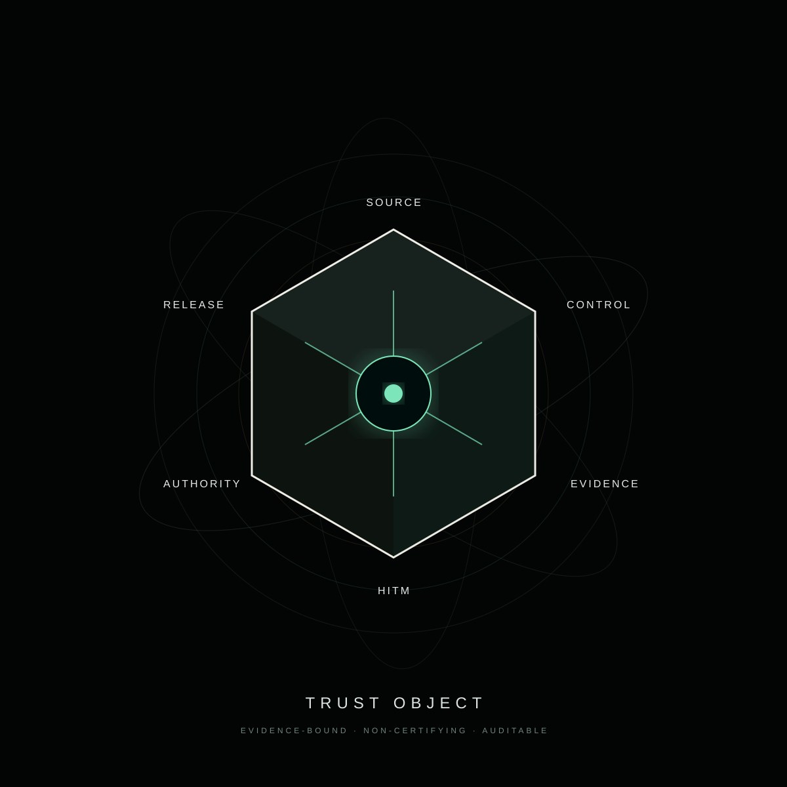
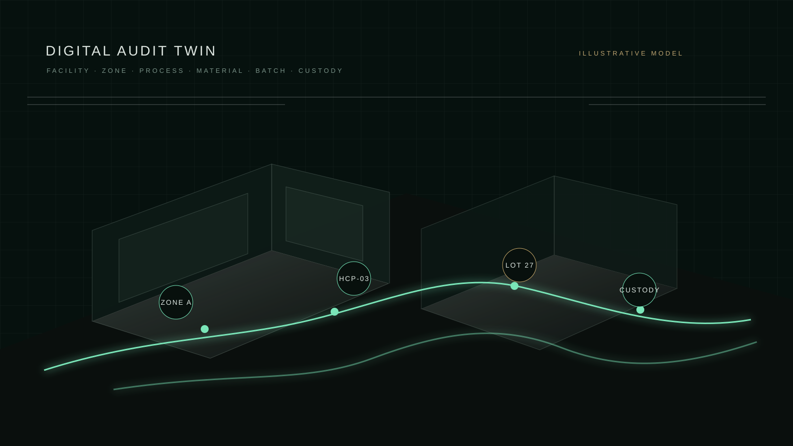
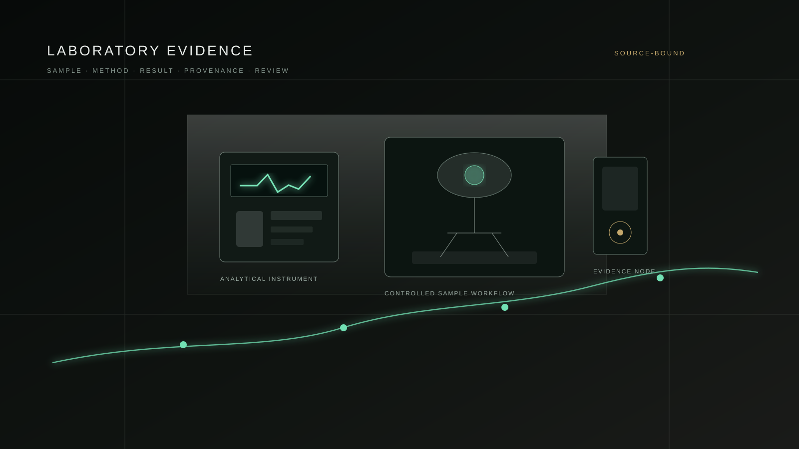
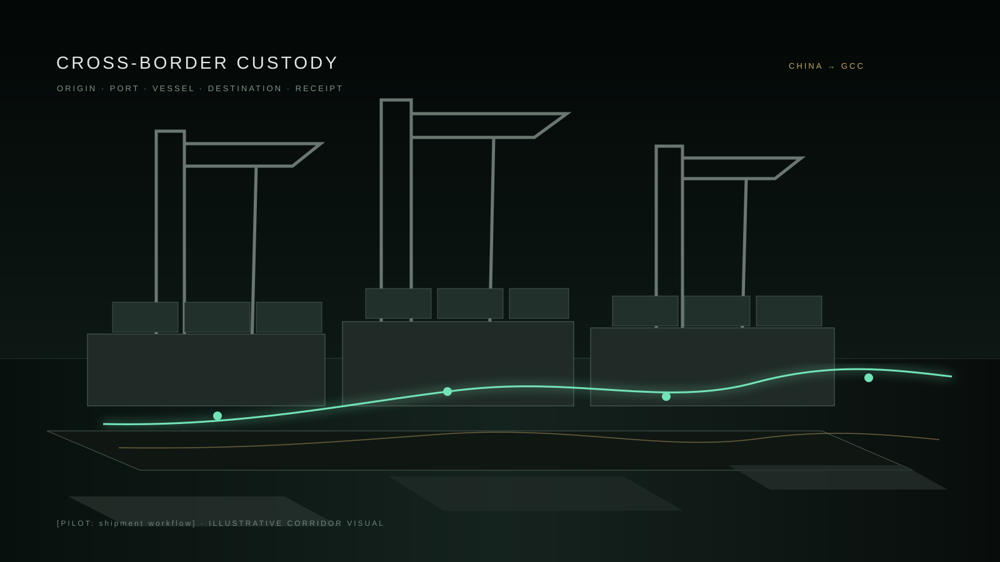

Identity before inference.
Facility, material, product, batch and shipment objects begin with a traceable source identity. No downstream score can repair an unidentified source.
GLOBAL HALAL SUPPLY CHAIN LIMITED
A cross-border trust infrastructure connecting source integrity, technical controls, laboratory evidence, physical custody, accountable human determination and operational release — without substituting for competent authority.
A global Halal supply chain should not depend on a badge people are simply asked to trust. It should expose the chain of evidence, controls, custody and accountable decisions behind the operating state.
GHSCL’s operating model makes the path visible from source obligation to control, evidence, review and release. Technology strengthens traceability and assurance. Certification remains a competent-authority decision.
Facility, material, product, batch and shipment objects begin with a traceable source identity. No downstream score can repair an unidentified source.
Documents, laboratory results, events, audit tests, findings and corrective actions are linked to the exact requirement and object they support.
Assessment and anomaly detection may be automated. Reserved determinations remain accountable to humans and competent authorities.
An operational release is an internal process state after required gates pass. It is not a Malaysian Halal certificate and does not replace destination acceptance.
The V4 visual identity treats the trust packet as a product-grade object: source, control, evidence, HITM, authority and release remain distinct layers rather than a blended score.
SOURCE → CONTROL → EVIDENCE → HITM → AUTHORITY → RELEASE

Click the chain. Each stage is explicit, attributable and testable. A failed hard gate cannot be compensated for by a higher aggregate score elsewhere.
The path begins with the competent authority or destination requirement. The platform records the boundary; it does not replace it.
Facility, zone, process, material, formula, batch, shipment and custody events can be bound into a single lineage. Evidence attaches to the real control point instead of disappearing into isolated files.
ILLUSTRATIVE ARCHITECTURAL RENDER · NOT LIVE FACTORY DATA

FACILITY → ZONE → PROCESS → MATERIAL → BATCH
SAMPLE → METHOD → RESULT → PROVENANCE → REVIEWThe assurance layer binds sample identity, method, laboratory scope, result, review and the control requiring that evidence. A laboratory result is evidence; it is not itself a Halal certification decision.
ILLUSTRATIVE CGI · NO FABRICATED LAB RESULT
Telemetry can strengthen evidence and detect a trust fracture early. Critical exceptions move to HOLD, blast-radius analysis, HITM and re-verification. They do not auto-release.
The pilot corridor binds origin evidence, laboratory workflows, batch identity, logistics custody, port events and destination verification into one auditable chain.

ORIGIN → LAB → PORT → VESSEL → GCC → RECEIPTEach actor sees the evidence and controls relevant to its role without pretending that manufacturers, laboratories, logistics operators and authorities are one organization.
Inspect source lineage, evidence provenance, exceptions, HITM routing and the distinction between internal release and certification.
The catalogue identifies the operating set used by the project. Licensed normative wording is not published on this website.
GHSCL is building a digital trust and trade infrastructure for cross-border Halal supply chains: designed to make evidence inspectable, exceptions visible and human decision boundaries explicit.